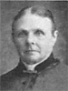
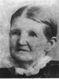
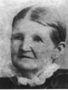

John and Ann Green Dutson Family Group
Home
Histories
Charts
Photos
Maps
Restricted
News
Info
Contact
|
John Dutson (23 Aug. 1801 - 1828) Ann Green  (12 Oct. 1802 -16 Jul 1893) (pictured at the right) (12 Oct. 1802 -16 Jul 1893) (pictured at the right)Married 7 Feb 1826 She married John Carling  on 10 Feb 1844. on 10 Feb 1844.
History of William Green - Ann's father.
|
 
|
 |
Jane Ann Dutson 10 Mar. 1827 - 8 May 1911 Married Alexander Melville 29 May 1848 The 1st child of John and Ann Green Dutson |
 1 1 23 23 4 4 |
John William Dutson 28 Sep. 1828 - 6 May 1887 Married Elizabeth Jane Cowley 10 Aug 1850 Married Caroline Geneva Jenkins 7 Sep. 1858 Married Frances Emeline Nixon 14 Apr. 1873 Married Ann Palmer 2 Nov. 1877 The 2nd child of John and Ann Green Dutson |